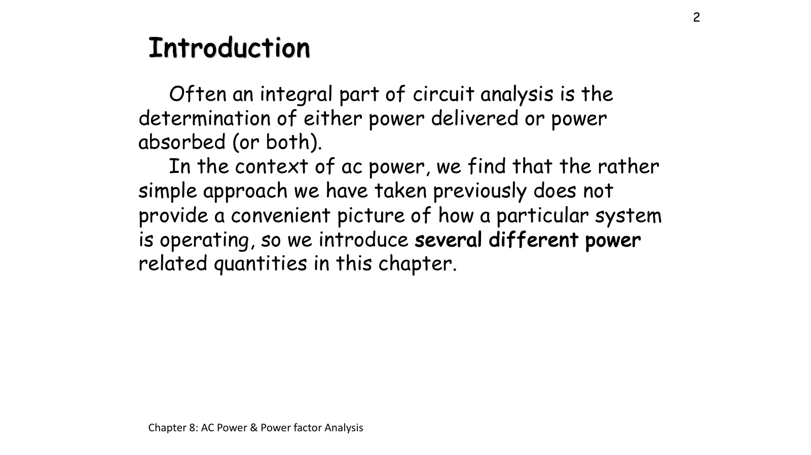
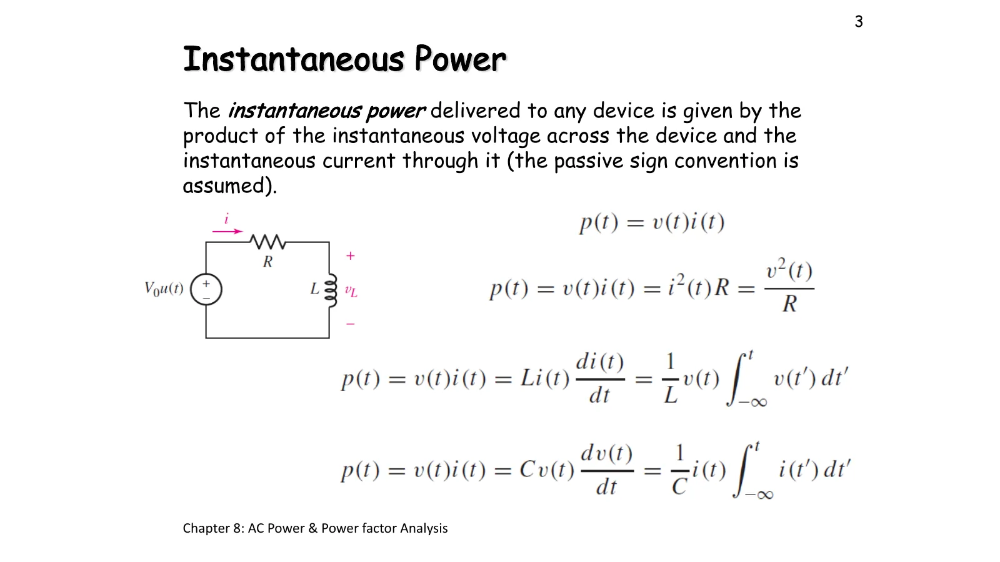
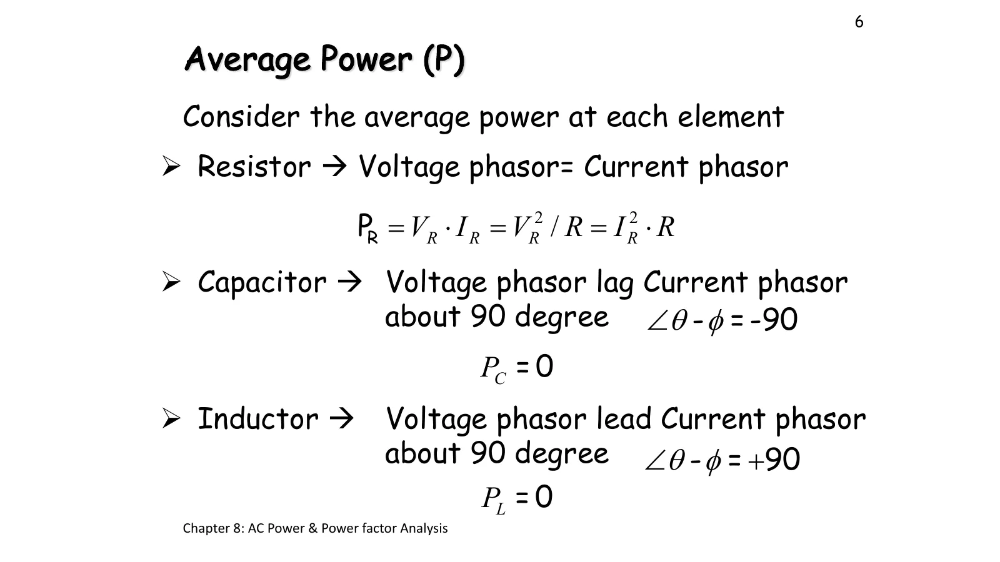
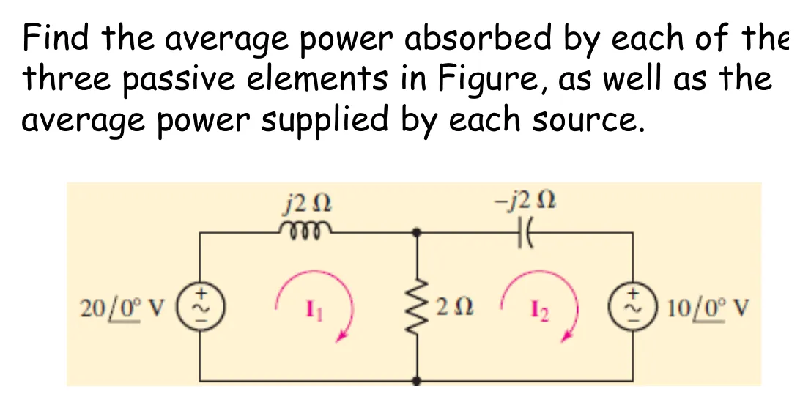

กำลังไฟฟ้าขณะใด ๆ และกำลังเฉลี่ย Instantaneous and average power — p(t) = v(t) i(t) and its mean P
Instantaneous and average power p(t) = v(t) i(t) and its mean P
ในวงจรกระแสตรง กำลังคือ \(P = VI\) ค่าเดียวที่คงที่ แต่เมื่อแรงดันและกระแสเป็นคลื่นไซน์ ผลคูณ \(p(t) = v(t)\,i(t)\) ก็เปลี่ยนไปตามเวลา สไลด์หน้า 3 จึงนิยามกำลังไฟฟ้าขณะใด ๆ ก่อน แล้วหน้า 4–5 หากำลังเฉลี่ย \(P\) ซึ่งเป็นตัวเลขเดียวที่บอกว่าอุปกรณ์รับพลังงานไปใช้จริงเท่าใด ในบางช่วงของคาบ \(p(t)\) ติดลบ แปลว่าอุปกรณ์คืนพลังงานกลับให้แหล่งจ่าย ตัวเหนี่ยวนำและตัวเก็บประจุคืนพลังงานที่รับไว้ทั้งหมด กำลังเฉลี่ยของมันจึงเป็นศูนย์ หน้านี้มีภาพจำลอง \(p(t)\) (ส่วน A) ที่มาของสูตรกำลังเฉลี่ยและกรณีของ R, L, C (ส่วน B) และโจทย์สไลด์หน้า 7 (ข้อ 1)
In a DC circuit power is the single constant \(P = VI\). When the voltage and the current are sinusoids, the product \(p(t) = v(t)\,i(t)\) changes with time. Slide p. 3 therefore defines the instantaneous power first, and pp. 4–5 find the average power \(P\), the one number that says how much energy a device really takes. During part of each cycle \(p(t)\) is negative: the device returns energy to the source. Inductors and capacitors return all the energy they take, so their average power is zero. This page has a \(p(t)\) simulation (section A), where the average-power formula comes from and the cases of R, L and C (section B), and the problem of slide p. 7 (problem 1).
ประเด็นสำคัญของหน้านี้
- \(p(t) = v(t)\,i(t)\) ตามหลักเครื่องหมายแบบพาสซีฟ (passive sign convention: กระแสไหลเข้าขั้ว + ของแรงดัน): \(p > 0\) อุปกรณ์รับพลังงาน และ \(p < 0\) อุปกรณ์คืนพลังงาน
- ถ้า \(v = V_m\sin(\omega t + \theta)\) และ \(i = I_m\sin(\omega t + \phi)\) จะได้ \(p(t) = \tfrac12 V_m I_m\cos(\theta-\phi) - \tfrac12 V_m I_m\cos(2\omega t + \theta + \phi)\) คือค่าคงที่บวกคลื่นที่ความถี่สองเท่า
- กำลังเฉลี่ย \(P = \tfrac12 V_m I_m\cos(\theta-\phi) = V_{\text{eff}}I_{\text{eff}}\cos(\theta-\phi)\) หน่วยวัตต์ (watt, W) โดย \(V_{\text{eff}} = V_m/\sqrt2\) คือค่ายังผล (effective value หรือ root mean square, rms) ของบทที่ 6 · \(P\) ขึ้นกับมุมต่างเฟส \(\theta-\phi\) เท่านั้น
- ตัวต้านทาน: \(\theta-\phi = 0\) ได้ \(P_R = V_{\text{eff}}I_{\text{eff}} = I_{\text{eff}}^2R = V_{\text{eff}}^2/R\) · ตัวเหนี่ยวนำ (\(+90^\circ\)) และตัวเก็บประจุ (\(-90^\circ\)): \(P_L = P_C = 0\)
- ในวงจรหนึ่ง กำลังเฉลี่ยที่แหล่งจ่ายส่งออกเท่ากับกำลังเฉลี่ยที่ตัวต้านทานรับ (สไลด์หน้า 7: 50 W = 25 W + 25 W)
Key points of this page
- \(p(t) = v(t)\,i(t)\) with the passive sign convention (current entering the + terminal of the voltage): \(p > 0\) the device takes energy, \(p < 0\) it gives energy back.
- With \(v = V_m\sin(\omega t + \theta)\) and \(i = I_m\sin(\omega t + \phi)\), \(p(t) = \tfrac12 V_m I_m\cos(\theta-\phi) - \tfrac12 V_m I_m\cos(2\omega t + \theta + \phi)\): a constant plus a wave at twice the frequency.
- Average power \(P = \tfrac12 V_m I_m\cos(\theta-\phi) = V_{\text{eff}}I_{\text{eff}}\cos(\theta-\phi)\) in watts (W), where \(V_{\text{eff}} = V_m/\sqrt2\) is the effective (root mean square, rms) value of chapter 6 · \(P\) depends only on the phase difference \(\theta-\phi\).
- Resistor: \(\theta-\phi = 0\) gives \(P_R = V_{\text{eff}}I_{\text{eff}} = I_{\text{eff}}^2R = V_{\text{eff}}^2/R\) · inductor (\(+90^\circ\)) and capacitor (\(-90^\circ\)): \(P_L = P_C = 0\).
- In a circuit, the average power sent out by the sources equals the average power taken by the resistors (slide p. 7: 50 W = 25 W + 25 W).

ดูภาพรวมของบทที่ผู้สอนเขียนในห้อง (สไลด์ปี 2561)See the chapter overview the instructor wrote in class (2018 slides)
p(t) = v(t)·i(t): พลังงานไหลเข้าและไหลกลับ
p(t) = v(t)·i(t): energy flowing in and back

แหล่งจ่าย \(v_s = V_m\sin(\omega t + \theta)\) ต่อกับโหลด \(Z = R + jX\) ค่าตั้งต้นคือ Hayt Example 11.2: ตำราให้ \(v = 4\cos(\pi t/6)\) V ซึ่งต้องแปลงเป็น sin ก่อน \(v = 4\sin(\pi t/6 + 90^\circ)\) V จึงได้ \(\mathbf{V} = 4\angle 90^\circ\) V คร่อม \(Z = 2\angle 60^\circ\ \Omega\) กราฟแรกคือ \(v\) กับ \(i\) กราฟที่สองคือผลคูณ \(p = vi\): พื้นที่สีเขียวคือพลังงานที่โหลดรับ พื้นที่สีแดงคือพลังงานที่คืนกลับ และเส้นประสีเขียวคือค่าเฉลี่ย \(P\) ลูกศรบนลวดด้านบนบอกทิศของพลังงานในขณะนั้น และแท่ง \(w\) ข้างตัวเหนี่ยวนำหรือตัวเก็บประจุคือพลังงานที่มันสะสมไว้ ลองกด "L ล้วน": พื้นที่เขียวกับแดงเท่ากันพอดี จึงได้ \(P = 0\) แล้วเลื่อนมุม \(\theta\) ของแหล่งจ่าย: \(p(t)\) เลื่อนตาม แต่ \(P\) ไม่เปลี่ยน
A source \(v_s = V_m\sin(\omega t + \theta)\) drives a load \(Z = R + jX\). The default is Hayt Example 11.2: the book gives \(v = 4\cos(\pi t/6)\) V, which must first be turned into sin, \(v = 4\sin(\pi t/6 + 90^\circ)\) V, so \(\mathbf{V} = 4\angle 90^\circ\) V across \(Z = 2\angle 60^\circ\ \Omega\). The first graph shows \(v\) and \(i\); the second their product \(p = vi\): green area is energy the load takes, red area is energy it gives back, and the dashed green line is the average \(P\). The arrow above the top wire shows which way energy flows at this instant, and the bar \(w\) beside an inductor or capacitor is the energy it stores. Press "L only": the green and red areas are equal, so \(P = 0\). Then move the source angle \(\theta\): \(p(t)\) shifts, but \(P\) does not change.
กำลังเฉลี่ย: ทำไมจึงเป็น ½VmIm cos(θ − φ) และกรณีของ R, L, C
Average power: why it is ½VmIm cos(θ − φ), and the cases of R, L, C

| อุปกรณ์ | มุมของ V เทียบ I | กำลังเฉลี่ย |
|---|---|---|
| ตัวต้านทาน | \(\theta - \phi = 0^\circ\) (เฟสเดียวกัน) | \(P_R = \tfrac12 V_m I_m = V_{\text{eff}}I_{\text{eff}} = I_{\text{eff}}^2 R = V_{\text{eff}}^2/R\) |
| ตัวเหนี่ยวนำ | \(\theta - \phi = +90^\circ\) (V นำหน้า) | \(P_L = \tfrac12 V_m I_m\cos 90^\circ = 0\) |
| ตัวเก็บประจุ | \(\theta - \phi = -90^\circ\) (V ตามหลัง) | \(P_C = \tfrac12 V_m I_m\cos(-90^\circ) = 0\) |
| Element | Angle of V relative to I | Average power |
|---|---|---|
| Resistor | \(\theta - \phi = 0^\circ\) (in phase) | \(P_R = \tfrac12 V_m I_m = V_{\text{eff}}I_{\text{eff}} = I_{\text{eff}}^2 R = V_{\text{eff}}^2/R\) |
| Inductor | \(\theta - \phi = +90^\circ\) (V leads) | \(P_L = \tfrac12 V_m I_m\cos 90^\circ = 0\) |
| Capacitor | \(\theta - \phi = -90^\circ\) (V lags) | \(P_C = \tfrac12 V_m I_m\cos(-90^\circ) = 0\) |
ดูสไลด์หน้า 5–6 ที่ผู้สอนเขียนในห้อง (สไลด์ปี 2561)See slides pp. 5–6 as written in class (2018 slides)
หากำลังเฉลี่ยที่อุปกรณ์พาสซีฟทั้งสามตัวดูดกลืน และกำลังเฉลี่ยที่แหล่งจ่ายแต่ละตัวจ่าย
Find the average power absorbed by each of the three passive elements, and the average power supplied by each source

แหล่งจ่ายเป็นเฟเซอร์ค่ายอด ภาพจำลองเปลี่ยนตามขั้น: ชิ้นส่วนของเมชที่กำลังเขียน KVL เรืองแสง จุดเริ่มวิ่งเมื่อได้กระแสเมช ระนาบแสดงกระแส แล้วเปลี่ยนเป็นแท่ง \(p(t)\) ของแต่ละอุปกรณ์ในขณะนั้น (บวก = รับ ลบ = จ่าย ◆ = ค่าเฉลี่ย) สังเกตว่าแท่งของ L และ C แกว่งขึ้นลงแต่ค่าเฉลี่ยเป็นศูนย์ และเมื่อครบทุกตัวผลรวมของทุกแท่งเป็นศูนย์ทุกขณะ ปุ่มใต้ภาพกลับขั้วแหล่งจ่ายขวาแล้วคิดใหม่ทุกขั้น
The sources are peak phasors. The simulation follows the steps: the parts of the mesh whose KVL is being written glow, the dots start once the mesh currents are known, the plane shows the currents, and then it turns into bars of the instantaneous \(p(t)\) of each element (positive = takes, negative = gives, ◆ = average). The L and C bars swing up and down but average zero, and with every element shown the bars add up to zero at every instant. The button under the picture flips the right source and redoes every step.
ดูวิธีทำที่ผู้สอนเขียนในห้อง (ปี 2561)See the solution written in class (2018)
![Handwritten solution of slide 7: find I1 and I2 using mesh analysis; mesh I1: −20∠0 + j2I1 + 2(I1 − I2) = 0, (2 + 2j)I1 − 2I2 = 20∠0; mesh I2: +10∠0 + 2(I2 − I1) + (−2j)I2 = 0, −2I1 + (2 − 2j)I2 = −10∠0; Δ = 4, ΔI1 = 20 − 40j, ΔI2 = 20 − 20j; I1 = 5 − 10j A, I2 = 5 − 5j A; IR = −5j = 5∠−90 A, IC = 5√2∠−45 A, IL = 11.18∠−63.4 A; VR = 10∠−90, VL = 22.36∠26.6, VC = 10√2∠−135; PR = ½(10)(5)cos(−90 − (−90)) = 25 watt; QC = −50 VAR; QL = 124 VAR; S20V = (20/√2)(11.18/√2)∠63.4 = 111.8∠63.4 VA = 50.08 + 99.96j VA; p.f. = cos(63.4) = 0.447 lagging](slides/ch8/L05.webp)
ฝึกเพิ่ม
More practice
ลองทำดู 1 — R ล้วน กับ L ล้วน
- ส่วน A กด "R ล้วน": \(p(t)\) ไม่ติดลบเลย ค่าสูงสุด \(V_mI_m\) และค่าเฉลี่ย \(P = \tfrac12 V_mI_m\) พอดีครึ่งหนึ่ง
- กด "L ล้วน": พื้นที่เขียวกับแดงเท่ากัน \(P = 0\) แท่ง \(w_L\) เต็มและว่างสองครั้งต่อหนึ่งรอบของกระแส
- กด "C ล้วน": เหมือน L แต่จังหวะตรงข้าม ช่วงที่ตัวเหนี่ยวนำรับพลังงาน ตัวเก็บประจุกลับคืนพลังงาน
ลองทำดู 2 — P ขึ้นกับมุมต่างเฟสเท่านั้น
- ใช้ค่าของ Hayt Example 11.2 (\(\theta = 90^\circ\)) แล้วเลื่อน \(\theta\) ไปที่ 0°: \(v\) และ \(i\) เลื่อนไปพร้อมกัน แต่ \(P = 2\) W เท่าเดิม
- \(p(t)\) ติดลบเป็นเวลา \(|\theta-\phi|/180^\circ\) ของคาบ: ที่ 60° คือหนึ่งในสามของเวลา
- คำถาม: ถ้าเพิ่ม \(V_m\) เป็นสองเท่าโดยโหลดเท่าเดิม \(P\) เพิ่มกี่เท่า
ลองทำดู 3 — แหล่งจ่ายรับหรือจ่าย
- ข้อ 1: แหล่งจ่าย 20 V จ่าย 50 W แต่แหล่งจ่าย 10 V รับ 25 W
- กด "กลับขั้วแหล่งจ่ายขวา" (10∠180° V) แล้วเปิดขั้นที่ 6: ตอนนี้แหล่งจ่ายทั้งสองตัวจ่าย 150 W และ 75 W รวม 225 W เท่ากับที่ตัวต้านทานรับ
- สรุป: แหล่งจ่ายจะรับหรือจ่ายขึ้นกับวงจรทั้งหมด ไม่ใช่ขึ้นกับตัวมันเองตัวเดียว
Try this 1 — R only and L only
- In section A press "R only": \(p(t)\) never goes negative; its peak is \(V_mI_m\) and its average \(P = \tfrac12 V_mI_m\), exactly half.
- Press "L only": the green and red areas are equal, \(P = 0\), and the bar \(w_L\) fills and empties twice per cycle of the current.
- Press "C only": the same as L but in opposite timing; while an inductor takes energy, a capacitor gives it back.
Try this 2 — P depends only on the phase difference
- With Hayt Example 11.2 (\(\theta = 90^\circ\)), move \(\theta\) to 0°: \(v\) and \(i\) shift together, but \(P = 2\) W stays.
- \(p(t)\) is negative for \(|\theta-\phi|/180^\circ\) of each period: at 60° that is one third of the time.
- Question: if \(V_m\) doubles with the same load, how many times larger is \(P\)?
Try this 3 — does a source take or give?
- Problem 1: the 20 V source supplies 50 W, but the 10 V source absorbs 25 W.
- Press "flip the right source" (10∠180° V) and open step 6: now both sources supply, 150 W and 75 W, 225 W in total, equal to what the resistor takes.
- Conclusion: whether a source takes or gives depends on the whole circuit, not on the source alone.